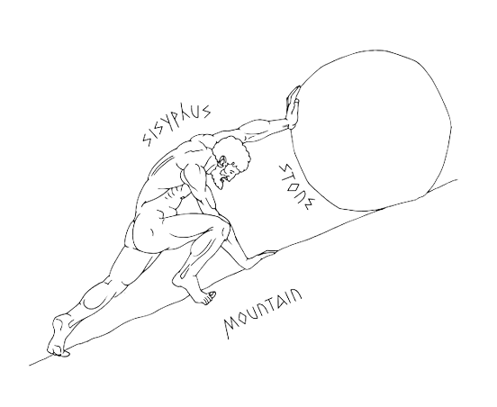
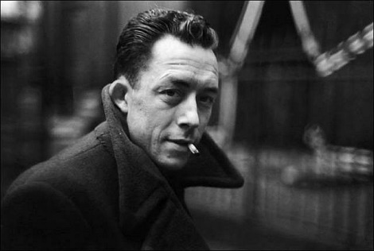
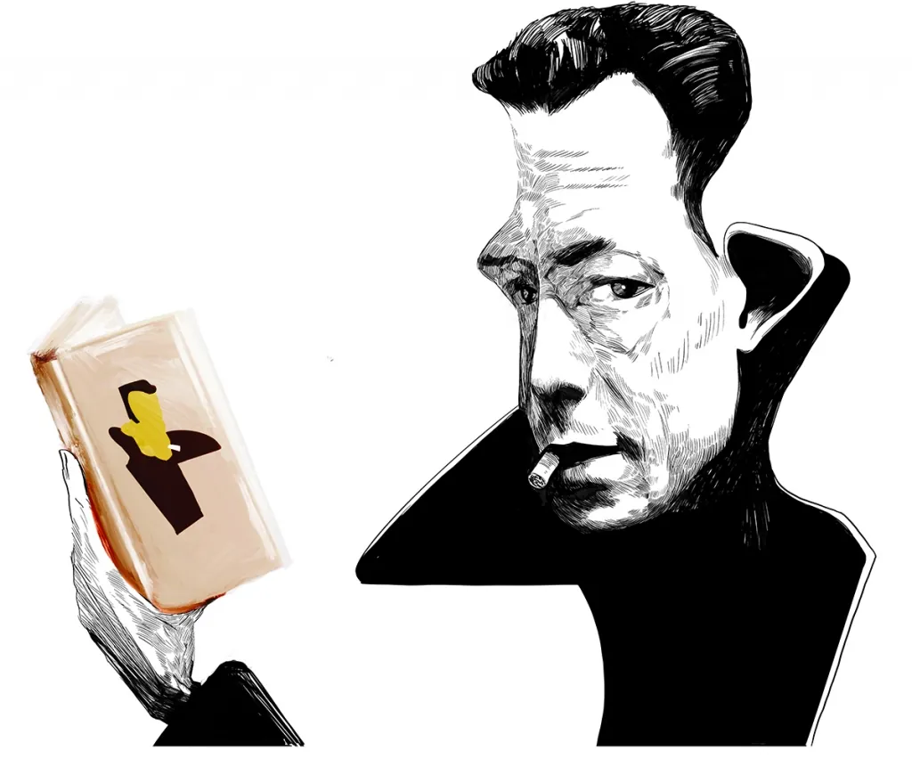
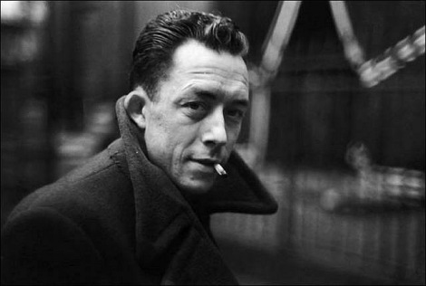
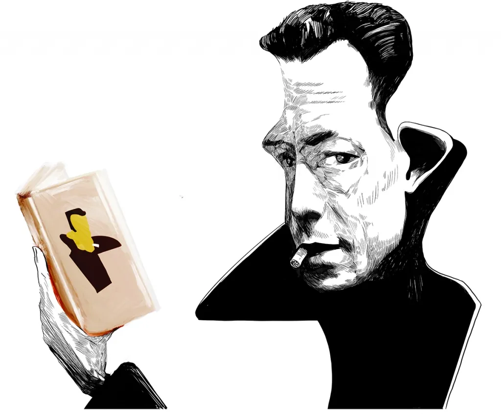

Albert Camus chamou o século XX de “o século dos rancores”. Nascido em novembro de 1913, viveu uma vida relativamente curta e intensa. Morreu em 1960, três anos depois de receber o Prêmio Nobel de Literatura. Já se vão 100 anos de seu nascimento, mas é difícil não pensar em Camus como um intelectual do nosso tempo. Defini-lo é perigoso. A melancolia, a estética noir dos cafés de Saint-German-des-Prés andam lado a lado com a imagem do homem viril, amante da dança, do sol, da Espanha e de algumas das mulheres mais encantadoras de seu tempo, como Maria Casares e Catherine Sellers.
Camus viveu o lado obscuro do século XX. Século da “peste”, do medo, da submissão do homem ao absurdo da ideologia. A grande guerra, a ocupação da França, o engajamento na resistência, a guerra de independência na Argélia, sua terra natal e de formação. Após o fim da guerra, foi um dos poucos intelectuais franceses a tomar plena consciência – e a tratar disso com coragem – do horror soviético, dos campos de concentração, do absurdo totalitário. Acossado pela intelligentsia ligada, ou simpática, ao sovietismo, condenou igualmente os ataques nucleares dos Estados Unidos ao Japão; a prerrogativa dos vetos, no Conselho de Segurança da ONU; o absurdo da Guerra Fria, cuja lógica sempre se recusou a adotar. Fez da oposição ao franquismo quase sua obsessão pessoal.
O desassossego que sempre acompanhou Camus não se restringia ao contexto histórico em que viveu. Seu tema é existencial. A solidão. Sua própria. “Se eles não querem que eu lute”, escreveu, em 1939, logo depois de ser impedido de servir na guerra, em função da tuberculose crônica, “é porque meu destino é sempre ser deixado de lado.” O desconforto, a inadequação. Camus declarou certa vez que passara a vida com uma estranha sensação de que era culpado de alguma coisa. A desconfiança crônica com a qualidade de sua literatura. O casamento desapaixonado com Francine. O fastio com a vida intelectual parisiense. A sedução da fuga para as “cidades sem passado”. E o tédio das conferências. Uma delas, em Porto Alegre, numa noite fria, agosto de 1949, durante uma turnê pelo Cone Sul. Recebido com uma fala curta e elogiosa de Erico Verissimo, anotou em seu diário: “Essas ilhotas de civilização são frequentemente horrendas”.
Algumas obras do Sr. Camus:
.jpg)
.jpg)
.jpg)
Imagens do Sr. Camus:
.jpg) 


